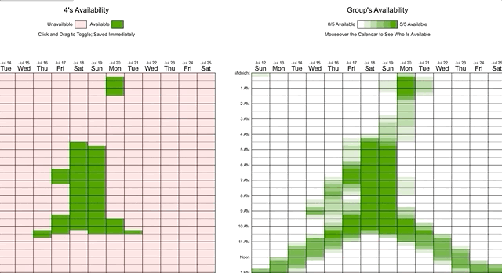
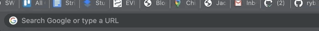

My summer
I spent my summer contracting remotely for quirk e-consulting, a team sponsored and created by Thomas Balligner to contribute to and improve upon existing open-source projects. It was fun, and I learned a lot about software engineering in the real world. Here's what I worked on:
bpython
bpython is a fancy interface to the python interpreter, with autocomplete, variable descriptors, syntax highlighting, auto-indentation, and my personal favorite: UNDO. Stay tuned to hear about some of my contributions.

curtsies
Curtsies, built to be the front-end of bpython, is a library with various terminal visual operations, like cursor moving, and colored strings. Here's a game I made to demonstrate:

Personal Projects
when2meet art
This was a silly one. I made a script that allowed me to render images onto the calendar on popular group meeting site when2meet.com. I wrote a blog post about it.
personal website
I don't want to forget what I do, so I made this website to document my projects. It also makes a great portfolio. I built it from scratch with HTML and CSS, hosting it as a static s3 site on AWS.
